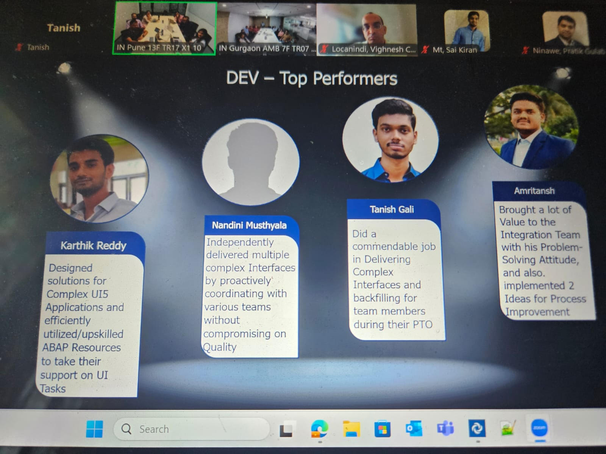
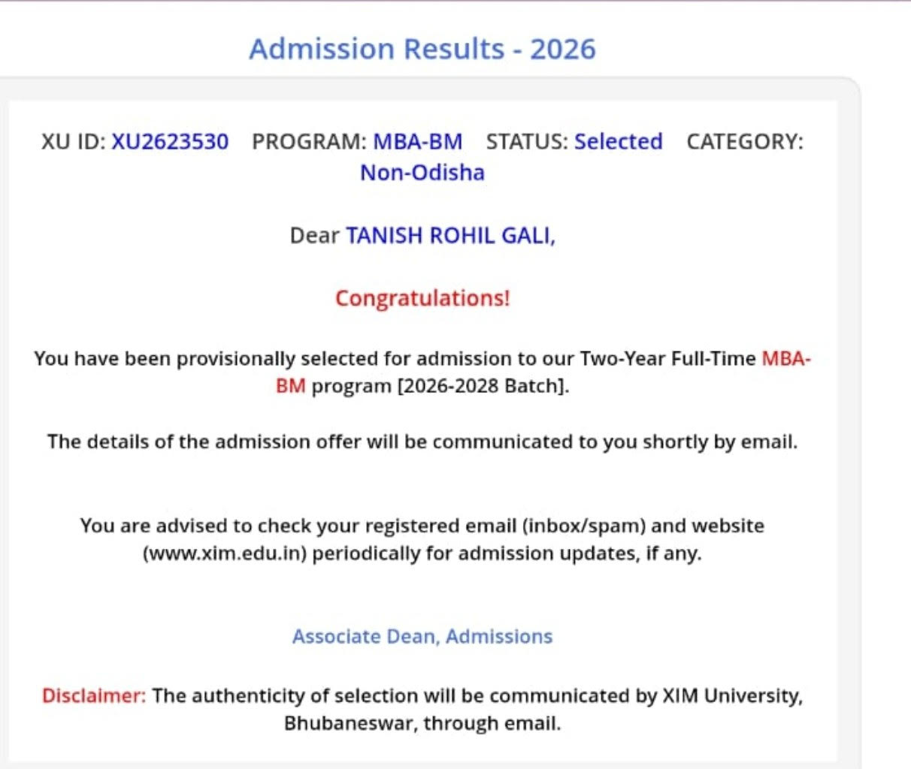

07 · gallery
Moments That Matter



If you are willing to do more than you are paid to do, eventually you will be paid to do more than you do.
I am from Hyderabad. I completed my 11th and 12th in the Science stream, and my graduation in Computer Science Engineering from CBIT, Hyderabad.
After graduating, I worked two years at Deloitte USI Consulting as an SAP Integration Developer. My work involved connecting with clients, understanding requirements, and developing efficient technical solutions — from requirement gathering to go-live and post-go-live support.
For me, an MBA bridges technical expertise and managerial expertise — enabling me to contribute not only through execution, but through informed decision-making and leadership. That realisation brought me to XIMB.
Every milestone shaped the way I think, lead, and grow.
Growing up in a family with early exposure to the IT industry shaped my interest in technology and problem-solving.
Telangana Board of Secondary Education · CGPA: 10
TSBIE · Percentage: 98.4%
CGPA: 9.4
Greenfield SAP implementation for a Fortune 500 Healthcare client. Recognised with multiple Applause Awards during FY 2025–26.
DEV Top PerformerQADI: 99.16 · DM: 98.5 · VARC: 79.9
Currently in the MBA-BM program. The next chapter of a purposeful journey — one I'm writing with intention.
Received two distinct Applause Awards during FY 2024–26 for efforts during critical client go-live milestones.
Presented "Python source code Analysis for Bug Detection using Transformers" at the international ERCICA-2024 Conference.
Successfully published a design patent for "Real time Data Monitoring Smart Mining Jacket" — an innovative industrial safety framework.
The activities that keep me energized, entertained, and constantly learning.
Whether playing with friends or following international tournaments, cricket has taught me teamwork, resilience, and performing under pressure.
A long-time WWE fan — branding, storytelling, and audience engagement through the lens of sport entertainment.
From action-packed blockbusters to thought-provoking dramas, movies offer new perspectives and insights into different cultures and ideas.
Developed integration flows for a greenfield SAP implementation, connecting ERP with external 3PL WMS. Built bidirectional data pipeline for Order-to-Cash: outbound delivery requests to warehouse and inbound shipping confirmations updating inventory and billing statuses in SAP.
Engineered an intelligent code analysis system that acts as a comprehensive compiler for Python, simultaneously detecting 20+ categories of syntax, type, and value errors to reduce development workflow interruptions.
Developed a hazardous-environment safety monitoring system integrating wearable IoT sensors onto clothing. PHP backend displays live environmental analytics and triggers automated local and remote alarms during emergencies.


I don't wait for opportunities to be assigned. Whether learning a new technology, exploring adjacent workstreams, or solving unexpected challenges — I take initiative.
SAP consulting taught me to bridge business and technology. I can translate requirements across functional, technical, and stakeholder domains and align everyone toward a common goal.
During a demanding go-live phase, our team resolved nearly 50 defects over two months with extended hours and weekends. Staying composed helped me prioritize effectively.
I'd love to connect — whether it's about a project, a club, or just a good movie recommendation.